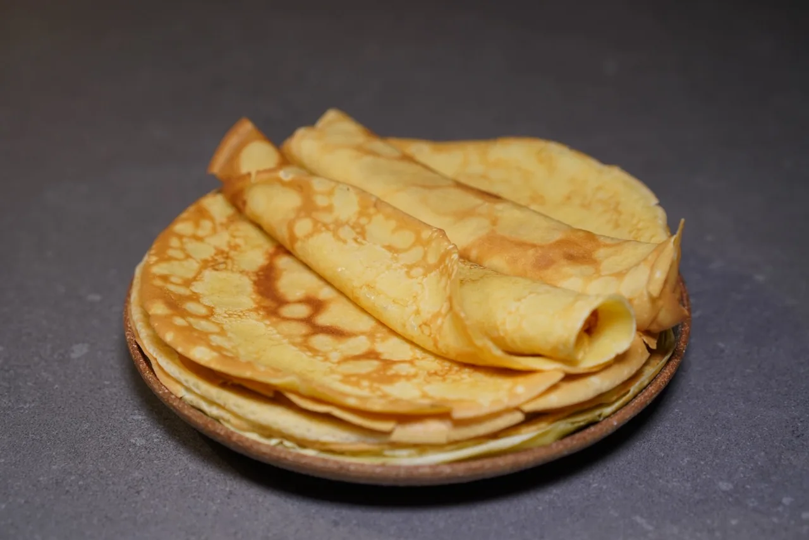

Crepes

Crepes are a staple of French cuisine, and their origin dates back to Chandeleur: Candlemas. This celebration at the beginning of February hails the beginning of the end of the winter season. They're meant to evoke the Sun.
Contrary to pancakes, crepes are thin; they can still be fluffy or crisp, depending on your taste.
Q: Now, the Sun is all great and good, but can you spread it with jam and eat it? Can you?
A: No, but you can do that with crepes.
- 1/2 liter of milk
- 2 tbsp of oil
- 2 tbsp of water
- 250 grams of flour
- Butter or margarine (to heat up the pan)
- Pour ingredients in a large bowl
- Stir until you have a batter
- Let it rest for at least 30 minutes, at most 24 hours in the fridge.
- Stir lightly again
- Heat up a non-stick frying pan and grease it with butter
- When the butter sizzles, pour one ladle's worth of batter
- Wait for the batter to be cooked through; if you like your crepe fluffy, flip it as soon as the batter is cooked through. If you like it crisp, let it cook for a couple more minutes
- Flip the pancake
- Put the finished crepe on a plate
- Repeat steps 5-9.
Note: You might think it's excessive to grease the pan every time you cook a crepe. Trust me, it's not.
That's it. Enjoy!